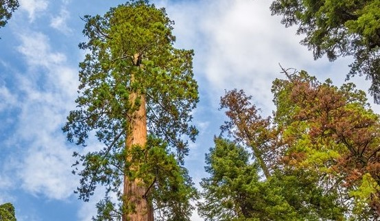

Julia Pastorelli - N22 - 3D
Escola Estadual Julia Calhau Rodrigues
Gimnosperma
As gimnospermas são, por exemplo, araucárias, cedros, cicas, ciprestes, pinheiros e como podemos
ver aqui, sequóias. As gimnospermas são o grupo de plantas dominante no planeta,
com aproximadamente 257.400 espécies diferentes, distribuídas em 13.678 gêneros e fazem parte do reino plantae.
Caracteristicas:
As principais caracteristicas da gimnosperma são a ausência de frutos e flores, já a presença
de sementes, estróbilos capazes de produzir pólen e estróbilos capazes de produzir óvulos.
Tambem se caracteriza pela presença de vasos condutores de seiva (xilema e floema).
Exemplo real de sequoia:
Ficha técnica sequoia:
Sequoia é um género de grandes coníferas da subfamília Sequoioideae da família Cupressaceae.
A única espécie extante deste género é Sequoia sempervirens, um megafanerófito nativo das florestas
temperadas costeiras.
Nome científico: Sequoia
Classificação superior: Sequoia
Classe: Pinopsida
Família: Cupressaceae
Género: Sequoia; nomen conservandum
Ordem: Pinales
Reino: Plantae
Local de origem da espécie: florestas temperadas costeiras do norte da Califórnia e do sudoeste do Oregon.
Ciclo de vida:
As gimnospermas alternam entre uma fase sexual e uma fase assexuada,
Na maioria dos seus representantes, não se observamos a presença de gametas masculinos flagelados
que necessitam de água para a reprodução, com algumas exessões. Mas, observamos a presença de pólen
reponsável pela junção dos gametas femininos e masculinos.

Imporância para o meio-ambiente:
Essas arvores são grandes responsaveis pela fauna e flora que podemos achar, sendo grandes abrigos para os
animais, além de produzir grande parte do oxigênio que respiramos.